National Gallery for junior classes

The National Gallery of London is a museum in London on Trafalgar Square, containing more than 2000 examples of Western European painting from the 13th to the early 20th century. The paintings in the gallery are exhibited in chronological order.
Some halls of the gallery
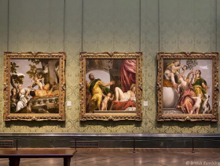
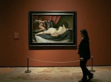
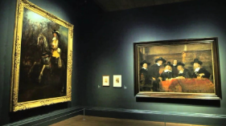
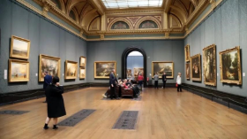
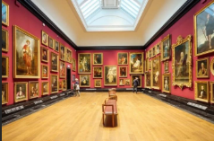
The Hall of Venetian Painting features masterpieces by the great masters Bellini, Mantegna, Conegliano, and Messina.
The Spanish Painting Room includes works by Velázquez, including his famous painting "Venus with a Mirror"
The Dutch Art School Hall displays paintings by Rembrandt, including portraits of his wives, friends, and associates, as well as a self-portrait of the artist.
The French Impressionists Hall features rare paintings by Monet, Renoir, Pissarro, Manet, and Sisley.
The halls of British art reflect the diversity of genres in English painting, such as Stubbs's paintings, Constable's landscapes, and the works of court portraitists Van Dyck and Holbein.
National Gallery for senior classes
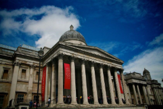
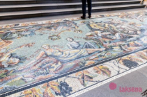
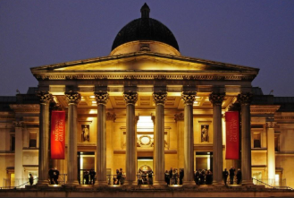
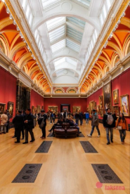
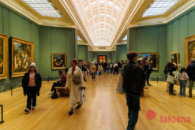
The National Gallery of London is an art museum that is well-known not only to residents and visitors of the British capital, but also to the rest of the world. According to statistics, the gallery is visited by approximately 6,416,724 people per year.
The second reason for pride is its venerable age. The museum was founded in 1824. It was during this period that the British House of Commons acquired the first exhibits. These included 38 paintings by the deceased Julius Angerstein. The exhibition was initially displayed in Angerstein's house on Pall Mall. The size of the building was compared to other national galleries and mocked in the press.
In 1831, Parliament agreed to build a new house for the art museum. Building took seven years. In 1838, another building appeared in Trafalgar Square. The gallery’s location in the middle of London made art easier for everyone to see.The collection grew, and there was not enough space. The problem was solved by expanding the building. In 1991, the building was expanded with the Sainsbury Wing, a prominent example of postmodern architecture in the UK. As a result of numerous renovations, only the facade facing Trafalgar Square remains of the original building.
The museum houses 2,300 paintings dating from the mid-13th century to the early 20th century. The total area of the gallery is 46,396 square meters, which is equivalent to six football fields.
The marble mosaic "The Awakening of the Muses" is located near the portico.
Two allegorical female figures, once representing victory, are placed near the western entrance. They are surrounded by smaller figures. The statues hold paintbrushes and other tools. They are accompanied by other sculptures.
Picture backgroundThe gallery has five floors, including underground ones.
The exhibition route occupies the entire first floor and is concentrated around four groups of rooms. These groups follow a chronological order.
Works from the 13th to the 16th centuries are displayed in the "blue zone"
Works from the 16th to the 17th centuries are displayed in the "purple zone"
Works from the 17th to the 18th centuries are displayed in the "orange zone"
Paintings from the 18th to the early 20th century can be seen in the "green zone"
Examples of paintings from this gallery
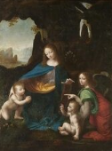
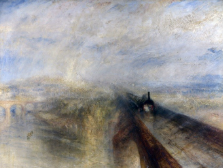